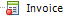

When working with GXserver, it would be useful if the IDE could add objects status indicators with respect to the KB's server. For example, what if we could identify in the Folder View, which of the objects were modified locally (they are pending for commit); new objects and so on?
To identify these states, an icon overlay has been added in the standard object icon for those Knowledge bases connected to a GXserver instance.
Working without locks (Standard mode)
- Those objects which were modified locally (pending for commit) add a full blue circle on the bottom left corner of the object icon.
- New objects add a full yellow asterisk on the same location of the object icon.
- Objects in Conflict add a red triangle on the bottom left corner of the object icon, and change the font color to red.
Working with locks
- In these cases a further distinction is made. The locked object (with no edition) adds an empty blue circle on the object's icon.
- After the object is modified; the new object state is locked and pending for commit (edited); the icon overlay changes from an empty blue circle to a full blue one.
- When the object is force edited (with no edition); it adds an empty red circle on the object's icon.
 - For those cases when the object is force edited and pending for commit (edited), a full red circle is added to the object's icon.
Considerations
All icons are overlayed on the bottom left corner. The hints are displayed wherever the object icon type is displayed. The following sample details the commit dialog with a new, deleted and modified object.
|